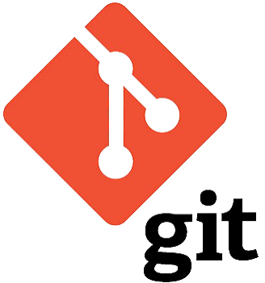

Usando Git e Github para versionamento de projetos.
O que é GIT?
O Git é um sistema de controle de versão distribuído criado para rastrear alterações em códigos-fonte e arquivos de projetos.

O que é GitHub?
O GitHub é uma plataforma online baseada na nuvem que serve para hospedar repositórios Git, permitindo o compartilhamento de código e a colaboração entre equipes.
Qual a diferença entre Git e GitHub?
Git: É a ferramenta de software instalada no seu computador que gerencia e registra o histórico das versões do código localmente.GitHub: É o serviço web (nuvem) que armazena cópias desses repositórios e adiciona ferramentas visuais e sociais para trabalho em grupo.
O que é um repositório?
Um repositório (ou repo) é a pasta de um projeto que contém todos os arquivos e o histórico completo de revisões e alterações monitoradas pelo Git.
O que é um commit?
Um commit é um registro definitivo (um "retrato" ou snapshot) do estado dos arquivos do projeto em um determinado momento.
O que é um clone (git clone)?
O git clone é o comando usado para copiar um repositório remoto existente (com todo o seu histórico de commits) para o seu computador local.
Quais as vantagens de utilizar controle de versões em projetos de software?
Histórico completo: Permite voltar a versões anteriores (rollback) caso algo dê errado.Trabalho em equipe: Facilita a colaboração simultânea de várias pessoas sem sobrescrever o trabalho dos outros.Rastreabilidade: Identifica exatamente quem fez cada alteração e quando ela ocorreu.Segurança e redundância: Cada cópia local do projeto possui todo o histórico do sistema.
Pesquise e comente sobre git add e git ignore.
git add: É o comando que move os arquivos modificados na sua pasta de trabalho (working directory) para a área de preparação (staging area), indicando ao Git quais alterações devem ser incluídas no próximo commit.
git ignore: É o arquivo que contém uma lista de arquivos e diretórios que o Git deve ignorar ao rastrear mudanças em um repositório.